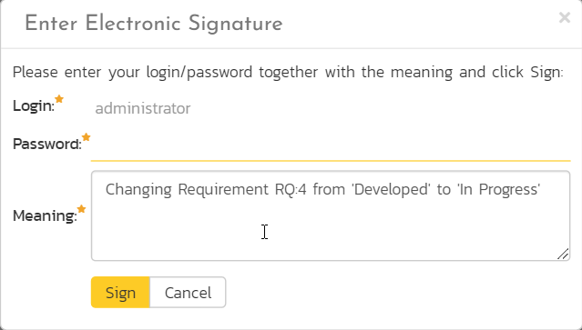
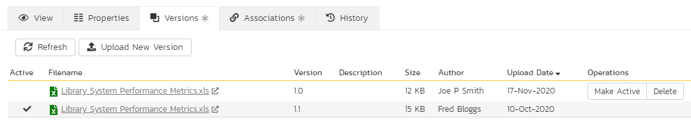

Document Management
This section outlines the document management features of SpiraPlan® that can be used to upload, manage and share documents between the different members of the product. This module includes support for uploading files and URLs, versioning of documents, the ability to organize into folders and categorize and search using meta-tags.
In addition the document management features are fully integrated into the rest of the system, so that documents attached to other artifacts (e.g. requirements, test cases, etc.) are automatically connected to the product documentation repository.
Document List
When you click Product Home > Documents on the global navigation bar, you will initially be taken to the product documents list screen illustrated below:

This screen consists of three main sections:
The top left-hand pane displays a hierarchical list of the various folders that have been setup for the current product. Clicking on the triangle icon will expand the child folders and clicking on the name of the folder will display the list of documents in the folder in the main pane to the right.
The main right-hand pane displays a list of all the documents contained within the currently selected folder. This list can be filtered and sorted, and you can choose how many rows of documents to display on the page at one time.
The bottom left-hand pane contains the "Tag Cloud". This is a list of all the tag names associated with documents in the product. The size of the font is proportional to the number of documents associated with the tag. Clicking on a tag name will automatically filter the list of documents to find items that contain the selected tag.
The main toolbar contains icons for all the operations that can be performed on the document list. You can add documents to the current folder, delete existing documents from the product, refresh the list of documents, export documents to another product, apply a filter, and clear the current filter. In addition there is the option to either display just the documents in the current folder or all documents in all folders. The latter is useful when you want to search for a specific document by keyword or tag name.
Add New Document
To attach a new document to the incident, you need to first click the "Add New" button to display the new attachment dialog box:

There are three different types of item that can be attached to an incident:
To upload a file, choose "File" as the type and then click the Browse button and select the file from your local computer, optionally enter a detailed description then click the "Upload" button. The document will be copied from your computer and attached to the artifact.
To attach a web-link (URL) to the artifact, you need to choose "URL" as the type and then enter the fully qualified URL (e.g. http://mywebsite.com?Document=1), an optional description and then click the "Upload" button to attach the web-link.
To attach a screenshot to the artifact, you need to choose "Screenshot" as the type and then copy the image to your computer's clipboard (e.g. on Windows computers, the PRINT SCREEN button captures the current page and adds to the clipboard). Once the image is in the clipboard, paste it into the editor using CTRL+V (or the equivalent keystroke for your operating system) and the item will appear in the preview window. You can then fill in the other fields and click "Upload" to attach the image.
Note: If you are using a non-Windows® computer (e.g. Macintosh®) that doesn't put file extensions on filenames (e.g. .xls for an Excel sheet) automatically, then you will need to manually add the file extension to the filename before uploading if you want it to be displayed with the correct icon in the attachment list.
View Document Information
When you hover the mouse pointer over any of the documents displayed in the document list, an information panel will be displayed that contains the name, description, version, document type and meta-tags of the document.
You can click on the document URL to actually open the document itself in a new window, click on the meta-tag links to find related documents that contain the same meta-tag, or click on "View Details" to see more information regarding the document, including an ability to edit its meta-information and see the different versions of the document.
Edit Document Folders
If you are a product administrator, you will see the "Edit" and "Add" buttons beneath the folder tree:

This lets you add, edit and delete task folders in the product. To add a new folder, click the "Add" button:

Choose the parent folder that you want to add the new folder under (or None if you are adding a new top-level folder) from the dropdown list and then enter the name of the new folder. Then click 'Add' save the new folder.
To edit or delete an existing folder, click the 'Edit' button to switch the folder tree to edit mode:

To edit or delete a specific folder, click on the 'Edit' button next to the folder:

You can change the parent folder and/or name of the folder and click "Update" to commit the change or click "Delete" to delete the folder entirely (including its contents).
Document Details
When you click on an item in the document list described above, you are taken to the document details page illustrated below:
This page is made up of three areas;
-
the left pane displays the documents list navigation;
-
the right pane's header, which displays: the operations toolbar; the editable name of the selected document; and the info bar (with a shaded background), which also contains the workflow status transitions (see below); and
-
the right pane's tabbed interface with rich information related to the document, including, where available, a preview of the document, the list of document versions, the list of artifacts that the document is associated with, and history of changes made to the document).
Please note that on smaller screen sizes the navigation pane is not displayed. While the navigation pane has a link to take you back to the documents list, on mobile devices a 'back' button is shown on the left of the operations toolbar.
The navigation pane can be collapsed by clicking on the "-" button, or expanded by clicking anywhere on the gray title area. On desktops the user can also control the exact width of the navigation pane by dragging and dropping a red handle that appears on hovering at the rightmost edge of the navigation pane.
The navigation pane consists of a link that will take you back to the product document list, as well as a list of other documents in the current folder. This latter list is useful as a navigation shortcut; you can quickly view the detailed information of all the peer documents by clicking on the navigation links without having to first return to the main document list page.
Depending on the user's role and whether they are listed as the owner or author of the document, displayed in the info bar beneath the document name is the current workflow status and an "operations" button which, when clicked, will show a set of allowed workflow operations:
These workflow transitions allow the user to move the document from one status to another. For example, when the document is in the Approved status, you will be given the options to:
Checkout -- changes status to "Checked Out"
Complete Document -- changes the status to "Completed"
Return to Review - changes the status to "Under Review"
After changing the status of the document by clicking on the workflow link, you can then fill in the additional fields that are now enabled and/or required. Once you've made the changes to the appropriate document fields, you can click "Save" to commit the changes or "Refresh" to discard the changes and reload the document from the database.
Please note that if digital signatures have been enabled for a particular workflow operation (and therefore a digital signature is required to confirm the status change. Workflow operations requiring a digital signature are marked with a padlock icon:

On attempting to save changes made after clicking a workflow operation that requires a digital signature you will be presented with the following popup:

Using the "Email" button on the toolbar, you can send an email containing details of the requirement to an email address or another user on the system:
You can specify the subject line for the email, and either a list of email addresses, separated by semicolons, or an existing product user .The content of the email is specified in the System Administration -- Notification Templates.
To be notified of any changes made to the current artifact via email, click the "Subscribe" button. If you already subscribed, the button will instead let you "Unsubscribe" to stop receiving emails about that particular artifact. Depending on your role, you may also see a dropdown arrow to the right of this button. This will let you subscribe others in the product to this artifact.
The top part of the main pane allows you to view and/or edit the details of the particular document. You can edit the various fields (name, description, etc.) and once you are satisfied with them, click one of the "Save" buttons to commit the changes. In addition, you can delete the current document by choosing "Delete", or discard any changes made by clicking "Refresh".
The lower part of the main pane can be switched between four different views by clicking the appropriate tab. Initially the pane will be in "Versions" mode. The functionality in each of these views is described below.
Preview
This tab displays a preview of the currently active version of the document. Previews are shown for a number of file types, notably plain text or code files, and images.

If a format cannot be previewed (for example a PDF or Microsoft Word document), the following message is displayed:

Document Versions
This view displays the list of different versions that exist for the current document. When you initially create a new document there will be only a single version (e.g. v1.0), however as revisions are made to the document, rather than having to create a whole new document, you can just upload the new revision as a new version (e.g. v1.1) and it will be added to the list of versions.
Each version in the list is displayed with its name, a description of what changed in the version, the version number assigned to the revision, the file-size, who uploaded the new version and a link to actually open the new version:

On this page, you have the option to delete an existing version, make a different version the active one (the one that users see when they view the document list and click on the link) and upload a new revision. To upload a new version, click on the 'Upload New Version' hyperlink:

In the popup dialog, you need to drag the file to be uploaded onto the upload icon (or click on the icon to browse to the file), enter a description of the changes made, a new version number and whether the new version should be made the active one, then click the [Upload] button to confirm the changes.
Note: This option is only available for File attachments. To change a URL attachment, you can simply edit the Filename field directly.
Associations
You can associate a document to many other artifacts in the system from this tab. If you originally uploaded the document as an attachment to an artifact, then the initial association will be already listed. Read more about how to manage and add associations to this artifact
History
Read about how the history tab works